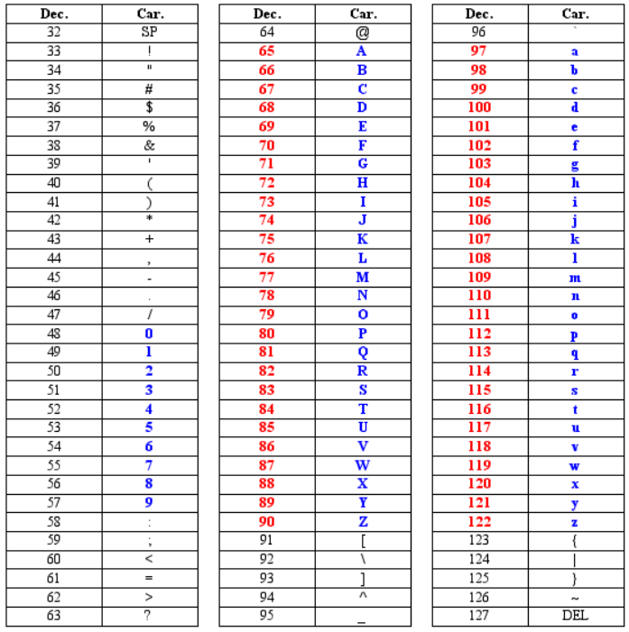
| #include <tf/tf.h> |
| double tf::getYaw(geometry_msgs/Quaternion orientation_quaternion); |
| Calcul de delta theta avec les conversions trigonométriques | float
cal_delta_Theta(float _theta, float _theta0) { float theta, theta0, delta_theta; if (_theta < 0) theta = _theta + 2 * M_PI; else theta = _theta; if (_theta0 < 0) theta0 = _theta0 + 2 * M_PI; else theta0 = _theta0; delta_theta = theta - theta0; if (delta_theta < -M_PI) { delta_theta = delta_theta + 2 * M_PI; } else { if (delta_theta >= M_PI) { delta_theta = delta_theta - 2 * M_PI; } } return delta_theta; } |
| fichier à inclure | #include <cmath> |
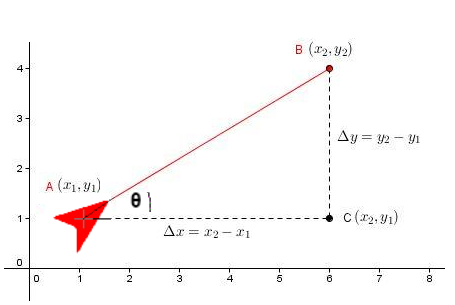
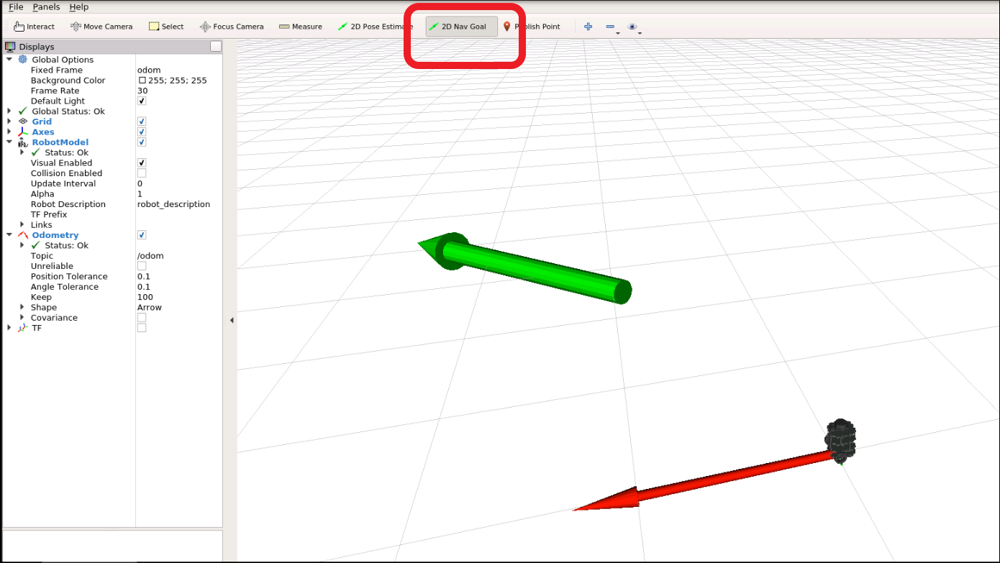
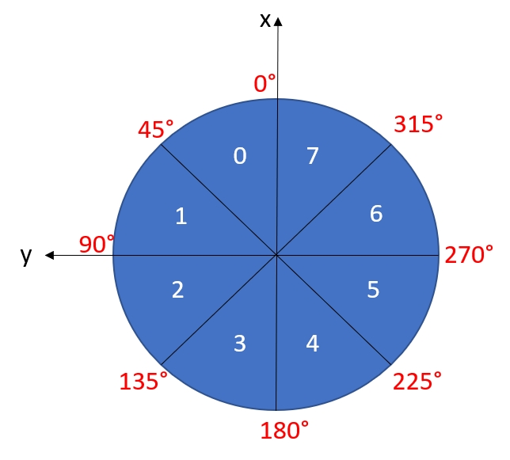
/set_behavior) :
permet à un opérateur de configurer à tout moment
le comportement du robot (mode manuel, auto_standard, auto_turbo, ...)Move.action) :
pilote la navigation et les "déplacement longs" du robot vers
une position cible, en utilisant votre nœud contrôleur./consigne_trajectoire): transmet le plan de route global que doit suivre le robotl.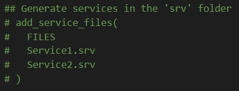 ==> |
add_service_files( FILES set_behavior.srv ) |
Pour les déplacements longs et la navigation, un service bloquerait l'appelant pendant toute la durée du trajet et ne permettrait pas d'en suivre l'avancement. Nous allons donc créer une action : l'appelant envoie un objectif (goal), reçoit des feedbacks réguliers sur l'état du robot (position, progression, batterie), et obtient un résultat final (result). Le robot est ainsi guidé de manière asynchrone, sans bloquer le client.
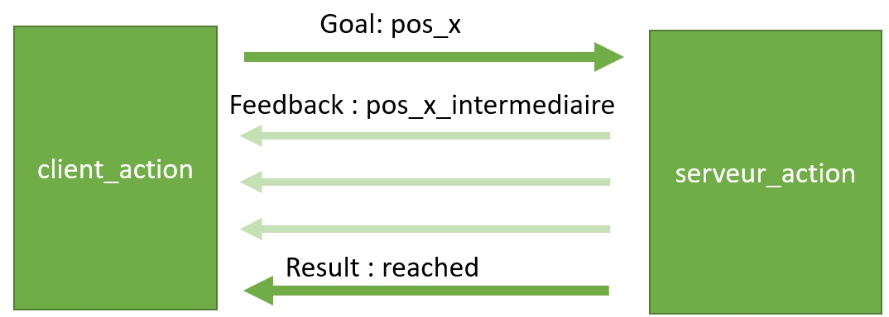
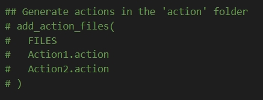 ==> |
add_action_files( FILES Move.action ) |
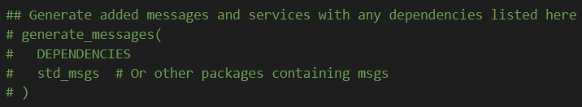 ==> |
generate_messages( DEPENDENCIES actionlib_msgs geometry_msgs nav_msgs sensor_msgs std_msgs ) |
| add_executable(serveur_action src/serveur_action.cpp) add_dependencies(serveur_action ${catkin_EXPORTED_TARGETS}) target_link_libraries(serveur_action ${catkin_LIBRARIES}) add_executable(client_action src/client_action.cpp) add_dependencies(client_action ${catkin_EXPORTED_TARGETS}) target_link_libraries(client_action ${catkin_LIBRARIES}) |
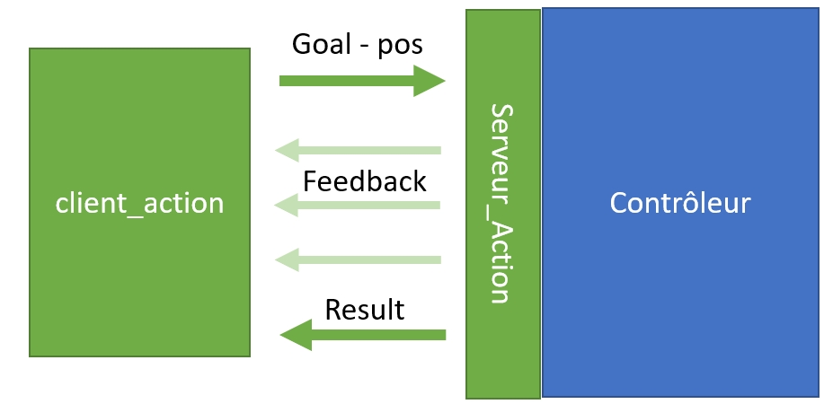
| DECLARATION | std::vector<Pose2D> trajectoire; |
| OPERATIONS | - trajectoire.size() : retourne la taille du vecteur - trajectoire.push_back(position) : insère un élément à la fin du vecteur - trajectoire.erase(trajectoire.begin()) : supprime le premier élement du vecteur - trajectoire[0] : permet l'accès au premier élement du vecteur |
| VERSION SIMU : roslaunch turtlebot3_gazebo turtlebot3_house.launch |
VERSION REELLE : robot TB3 dans le labyrinthe du labo 4105 |
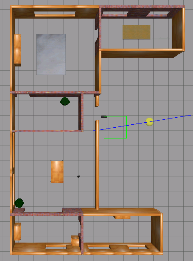 |
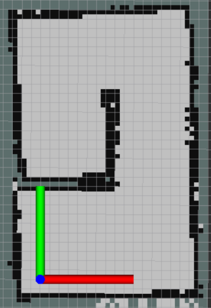 |
TURTLEBOT3_MODEL indique le type du robot burger. $ export TURTLEBOT3_MODEL=burger
$ roslaunch turtlebot3_slam turtlebot3_slam.launch$ export TURTLEBOT3_MODEL=burger
$ roslaunch turtlebot3_teleop turtlebot3_teleop_key.launch
Control Your TurtleBot3!
---------------------------
Moving around:
w
a s d
x
w/x : increase/decrease linear velocity
a/d : increase/decrease angular velocity
space key, s : force stop
CTRL-C to quitmapsera utilisé comme nom de fichier par défaut et créera map.pgmet map.yaml.$ rosrun map_server map_saver -f ~/map-foption
spécifie un emplacement de dossier et un nom de fichier
où les fichiers doivent être enregistrés.map.pgmet map.yamlseront enregistrés dans le dossier personnel ~/(/home/ubuntu).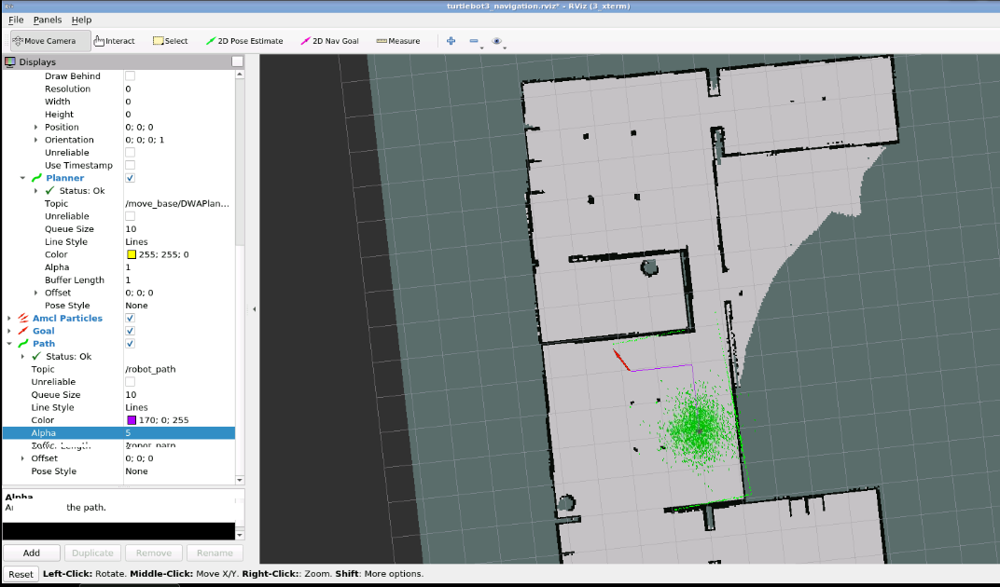 |
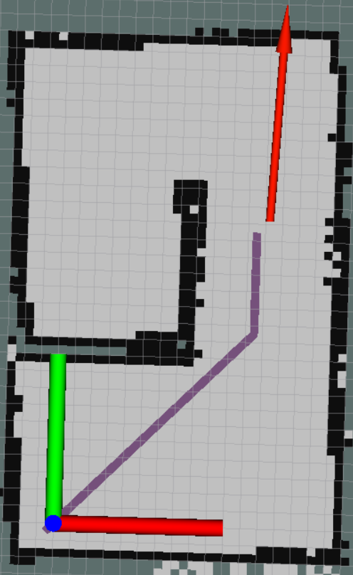 |
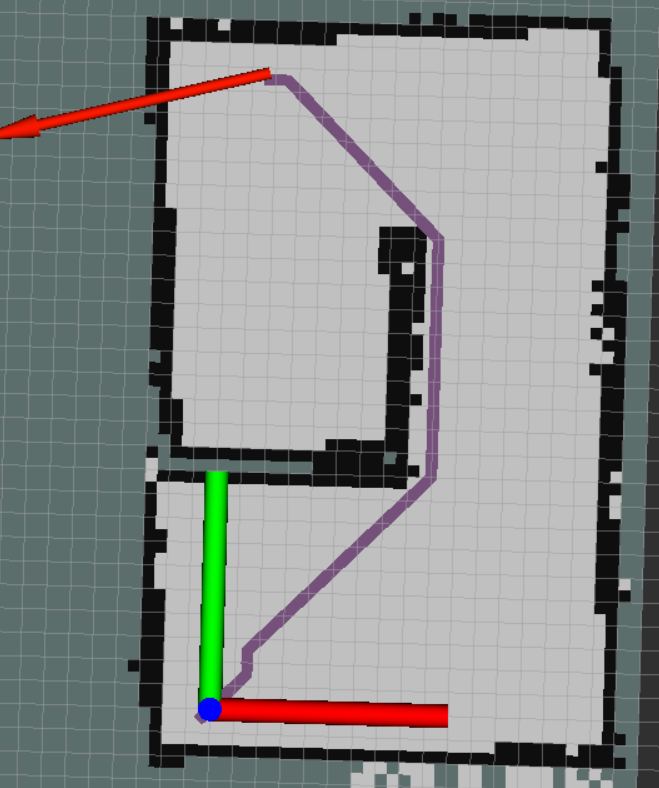 |
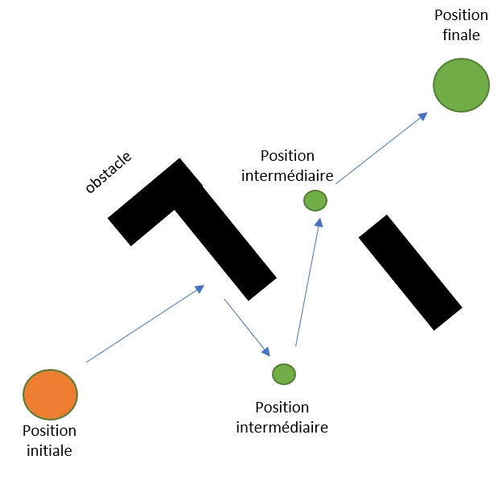